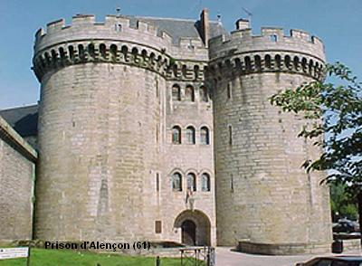
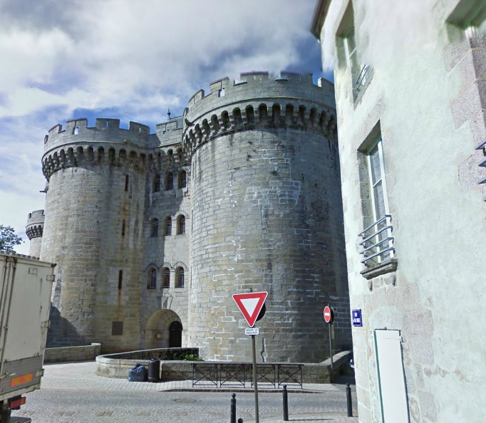
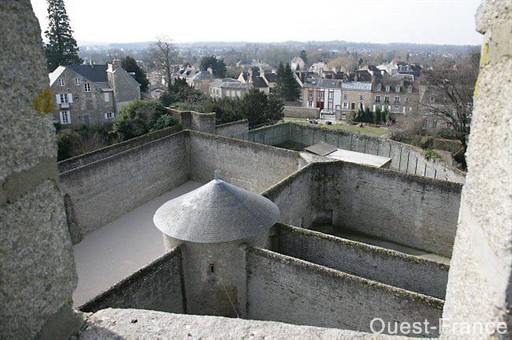
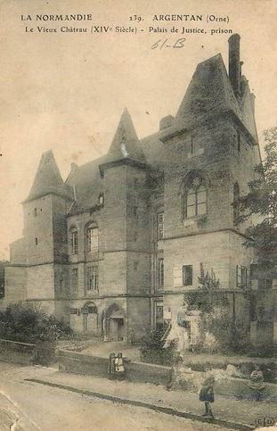
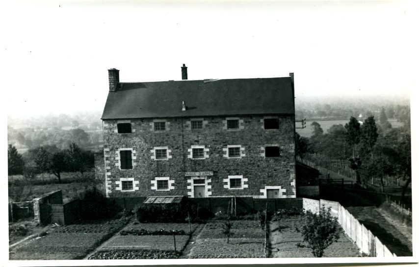
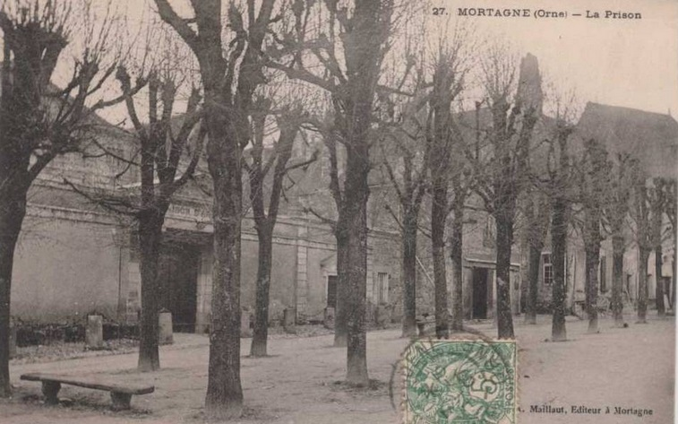

| Département | Images | Ville | Nom | Adresse | Période | Capacité | Histoire du lieu | Nombre d'exécutions |
| Orne (61) |    |
Alençon | Château des Ducs | 43, rue du Château | 1824-2010 | 50 places, 14 surveillants (1962) 47 places (2010) |
Château du XVe siècle, monument historique dès 1862, régime semi-cellulaire. 70 détenus une semaine avant sa fermeture. Fermée le 09 janvier 2010. Détenus transférés à la prison du Mans-Les Croisettes (Sarthe) | Deux exécutions en 1942 et 1947 |
| Orne (61) |  |
Argentan | Château des Ducs | Place du Marché | 1827-1926 | Construit au XIIe siècle, brûlé durant la guerre de Cent Ans, reconstruit au XIVe siècle. Une partie du château servait de tribunal, l'autre de maison d'arrêt. Bâtiments classés monuments historiques depuis 1889. | Aucune exécution | |
| Orne (61) |  |
Domfront | Maison d'arrêt | Rue Georges Clémenceau | 1827-1926 | Edifiée en même temps que la gendarmerie voisine. A la construction des nouveaux tribunaux en 1839, la ville fit creuser une nouvelle rue, la rue du Palais de Justice pour relier plus rapidement la prison en contrebas avec les salles d'audience. Démolies, les prisons ont laissé place à des locaux supplémentaires pour la gendarmerie. | Aucune exécution | |
| Orne (61) |  |
Mortagne-au-Perche | Maison d'arrêt et de correction | 12, place du Tribunal | 1832-1926 | Devenue la maison pour tous | Aucune exécution |
{kind=link}
{kind=link}
{kind=link}
{kind=link}
{kind=link}
{kind=link}